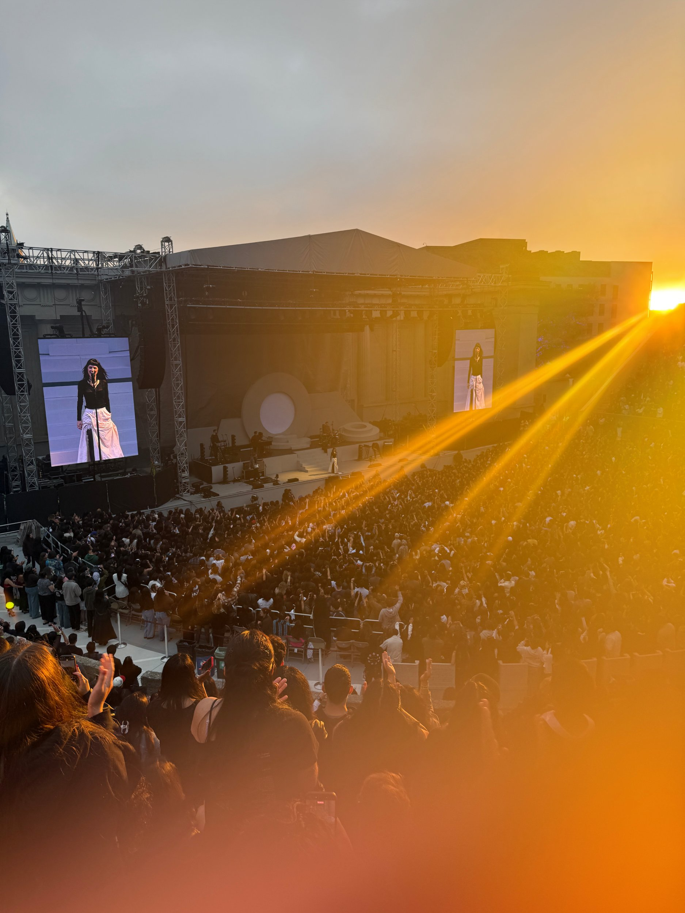
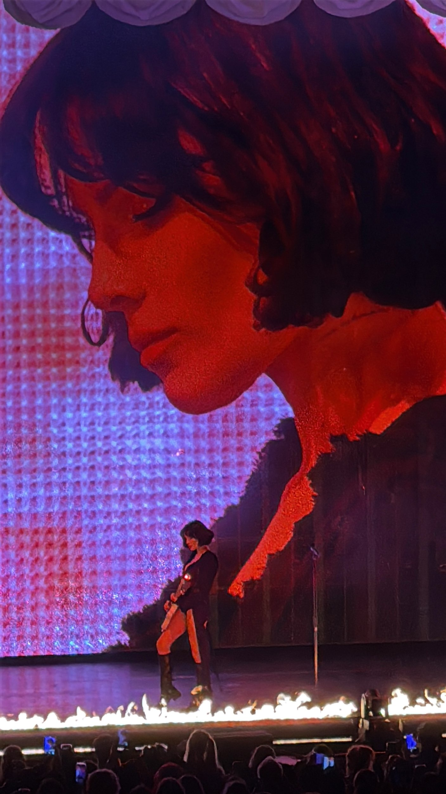

The Marías
July 2025The Marías
July 2025Over the summer my friend and I attended The Marias in Berkeley, CA for their Submarine tour. BEST CONCERT OF MY LIFE!! Stage presence 10/10. Maria 10/10. the Band 10/10. They played songs from their first album, Super Clean all the way to their newest album Submarine.
♪ hush, submarine

Halsey
April 2025Halsey
April 2025At the end of my third year, I attended Halsey's The Great Impersonator tour in Concord. It was the opening concert for this tour and it felt so special. I listened to halsey during high school and to see the shift in music and experience in real life was incredible.
♪ arsonist, the great impersonator

Not for Radio
January 2026Not for Radio
January 2026Stemming off of The Marias, Maria created a sub group called Not for Radio. This was an experimental band that is raw, emotional, and natural. I really enjoyed all the songs in the album and really loved listening to unreleased songs at this concert!
♪ living room, melt